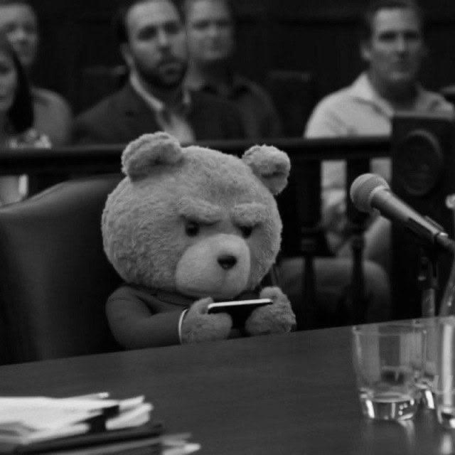

sempik
где-то в интернете
делаю сайты, которые никто не просил
Привет, я sempik. Пишу код, собираю странные штуки для браузера и иногда играю. Пиши в любую соцсеть ниже — отвечаю, когда не сплю.
github
недавно:

где-то в интернете
делаю сайты, которые никто не просил
Привет, я sempik. Пишу код, собираю странные штуки для браузера и иногда играю. Пиши в любую соцсеть ниже — отвечаю, когда не сплю.
github
загрузка…